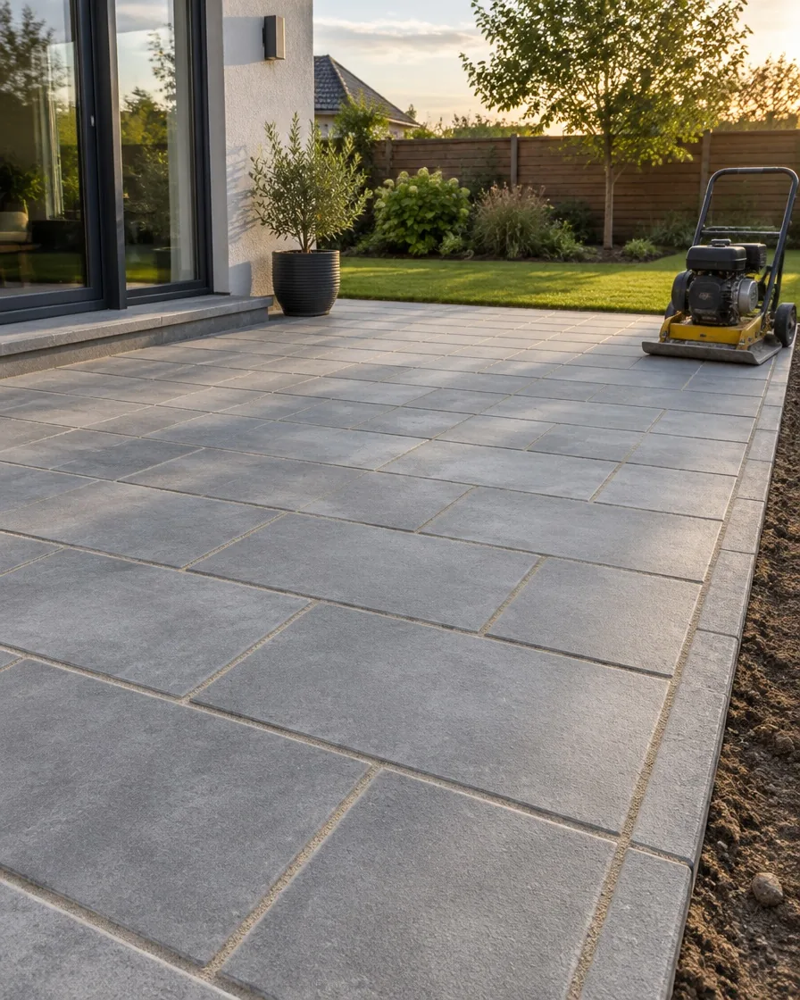
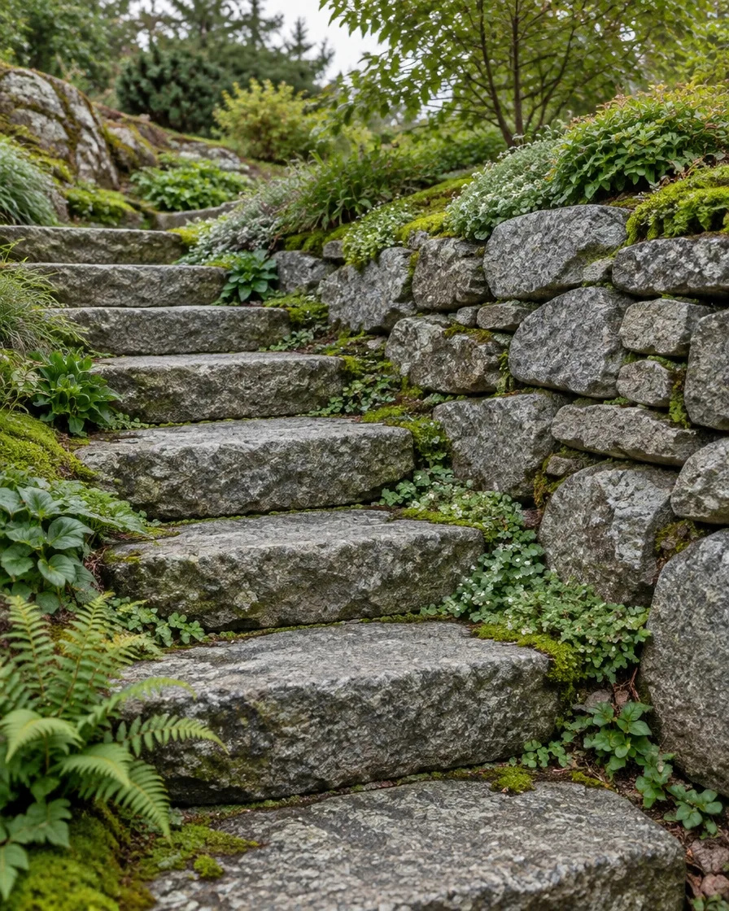
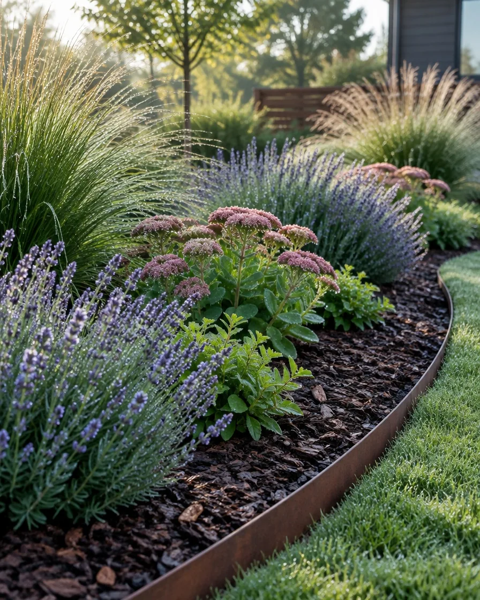
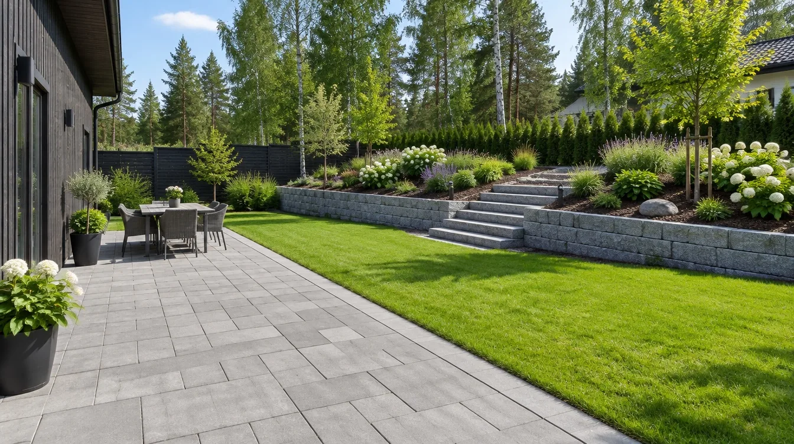
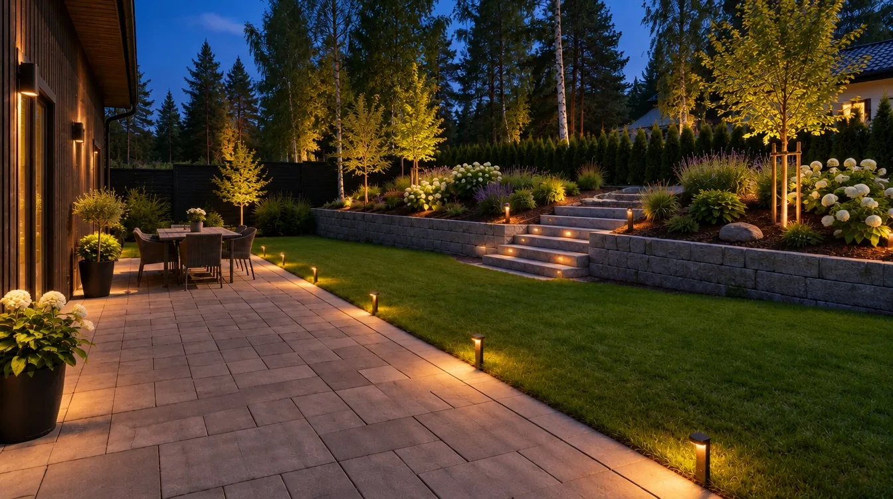
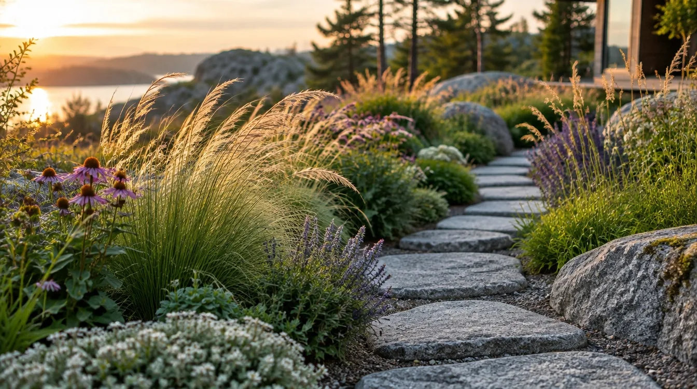

Piharakennus · Vantaa ja Espoo
Piha, joka kasvaa kanssanne.
Suunnittelemme ja rakennamme pihat kiveyksistä istutuksiin. Yksi tekijä alusta loppuun, ja hinta sovitaan ennen kuin kone käynnistyy.
2009 pihoja vuodesta
340 +valmista pihaa
1–3 vk tyypillinen rakennusaika
1 yhteyshenkilö koko työn ajan
Kiveykset Nurmikot Istutukset Kivimuurit Terassit Pihavalaistus Salaojat Kiveykset Nurmikot Istutukset Kivimuurit Terassit Pihavalaistus Salaojat
Palvelut
Kaikki pihan työt, yhdeltä tekijältä.
Hoidamme maanrakennuksen, kivityöt ja istutukset itse. Teille jää yksi yhteyshenkilö ja yksi aikataulu.

01 Kiveykset Pihatiet, terassit ja käytävät betoni- tai luonnonkivestä. Pohjat tehdään kantaviksi, jotta kivet pysyvät suorassa vuosia.

02 Muurit ja portaat Tukimuurit, porrasaskelmat ja rinteiden tasaukset. Luonnonkivi, muurikivi tai graniitti pihan tyylin mukaan.

03 Istutukset ja nurmet Perennat, pensaat, puut ja valmisnurmi. Valitsemme kasvit, jotka viihtyvät juuri teidän pihanne valossa ja maassa.
Terassit Puu- ja komposiittiterassit pihan tasoon Pihavalaistus Polku-, porras- ja puuvalot Salaojat Hulevedet pois perustuksilta Pihan kunnostus Vanhan pihan uusi elämä
Pihasuunnittelija
Piirtäkää oma pihanne, neliö kerrallaan.
Valitse materiaali ja maalaa ruudukkoon sormella tai hiirellä. Yksi ruutu on yksi neliömetri. Näette heti pinta-alat ja suuntaa antavan hinnan.
Vinkki: vedä yli monta ruutua kerralla. Näppäimistöllä nuolet ja välilyönti.
Valmiit pohjat: Pieni etupiha Perhepiha Tyhjennä
Suuntaa antava hinta-arvio 0 € 0 m² suunniteltu
Esimerkkihinnat sisältävät työn ja materiaalit (alv 25,5 %): nurmikko 15–30 €/m², kiveys 90–150 €/m², istutus 40–80 €/m², terassi 180–300 €/m², kivimuuri 250–450 €/jm. Lopullinen hinta sovitaan arviokäynnin jälkeen. Olemassa olevan pihan kunnostuksen työn osuudesta voi saada kotitalousvähennystä: 40 %, omavastuu 150 €, enintään 2 100 € / henkilö (vero.fi, tilanne 2026). Uudisrakennuksen piha ei oikeuta vähennykseen.
Lähetä suunnitelma arvioon
Työn kulku
Näin pihanne kasvaa valmiiksi.
01 Suunnittelu Käymme pihalla, mittaamme ja kuuntelemme. Saatte piirroksen ja kiinteän tarjouksen ennen töiden alkua.
02 Maanrakennus ja kiveys Kaivuu, salaojat ja kantava pohja. Kivet asennetaan tiiviille pohjalle, jolloin ne eivät painu.
03 Muurit ja portaat Rinteet tasataan tukimuureilla ja portailla. Kivi valitaan talon ja maaston mukaan.
04 Istutus ja viimeistely Kasvit, nurmi ja kate. Lopuksi käymme pihan yhdessä läpi ja annamme hoito-ohjeet.

Suunnitelma Kiveys Muurit Istutus 01 /04
Päivästä iltaan
Sama piha, kun aurinko laskee.
Pihavalaistus suunnitellaan ja kaapeloidaan samalla kun piha rakennetaan. Vedä aurinkoa kaarta pitkin ja katso, miltä piha näyttää illalla.

klo 13.00 Keskipäivä

Kivi, joka pysyy. viihtyy.
Esimerkkikohteita
Pihoja eri kokoon ja budjettiin.
Tyypillisiä töitämme pääkaupunkiseudulla. Jokainen piha suunnitellaan erikseen, joten nämä ovat suuntaa antavia esimerkkejä.
Tikkurila Omakotitalon takapiha Kiveys 60 m², valmisnurmi 120 m², kaksi perennapenkkiä ja polkuvalot.
3 viikkoa Espoo, Kauklahti Rinnetontin portaat Graniittiportaat, 14 metriä luonnonkivimuuria ja kaksi uutta tasannetta.
2 viikkoa Vantaa, Hakunila Rivitalon etupiha Pihatien uusiminen, salaojat ja matalat istutukset taloyhtiön ilmeeseen.
8 työpäivää Espoo, Leppävaara Vanhan pihan kunnostus Painuneet kivet nostettiin, nurmi uusittiin ja pihaan tehtiin terassi.
10 työpäivää
Kysyttyä Usein kysytyt kysymykset. Eikö vastausta löytynyt? Soittakaa 050 418 2736 .
Milloin pihatyöt kannattaa tilata? Suunnittelu sopii hyvin talveen. Maanrakennus ja kiveykset tehdään yleensä huhtikuusta lokakuuhun, istutukset keväällä tai alkusyksyllä. Kevään ajat täyttyvät ensimmäisinä.
Saako pihatöistä kotitalousvähennystä? Olemassa olevan pihan kunnostus- ja hoitotöiden työn osuudesta voi saada kotitalousvähennystä. Vuonna 2026 vähennys on 40 % työn osuudesta, omavastuu 150 € ja enimmäismäärä 2 100 € henkilöä kohden (vero.fi). Uudisrakennuksen pihan rakentaminen ei oikeuta vähennykseen. Merkitsemme työn osuuden laskuun erikseen.
Teettekö pelkän suunnitelman? Teemme. Suunnitelman voi toteuttaa kerralla tai vaiheissa, ja sen saa käyttöönsä, vaikka rakentaisi osan itse.
Mitä hintaan sisältyy? Tarjouksessa on eritelty työ, materiaalit, koneet ja maa-ainesten kuljetukset. Hinta sovitaan ennen töiden alkua, eikä siihen tule yllätyksiä ilman yhteistä sopimista.